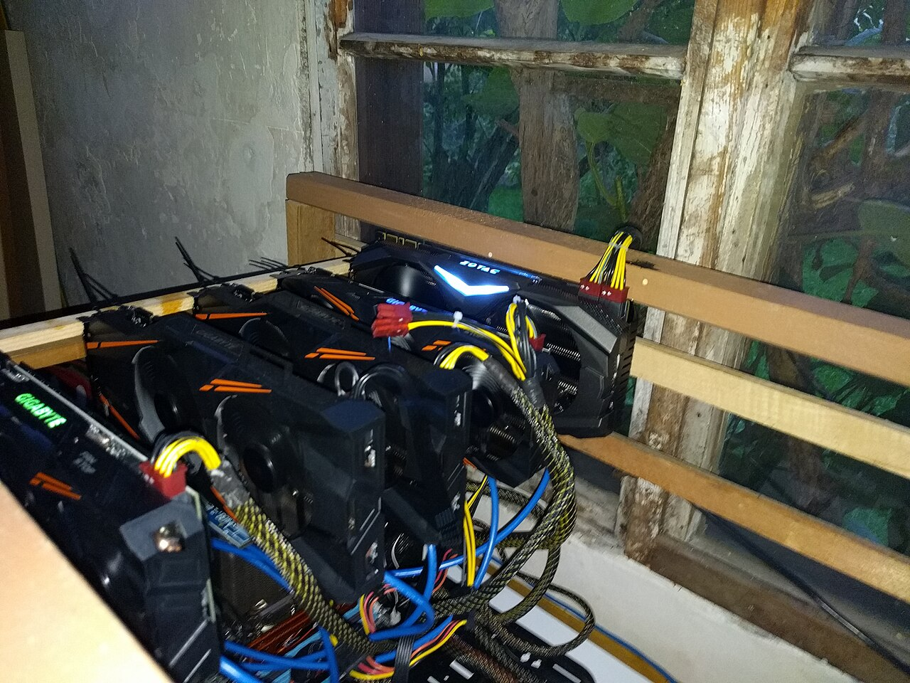

A repurposed GPU can be a good buy when you judge the individual card. The model matters, but its history matters more. Here is how to read that history before you spend money.

GPUs usually keep working
The GPU chip is solid state. It has no moving parts and does not wear out on a timer. In ordinary gaming use, a card often stays useful for years. The parts that age first sit around the chip: fan bearings, thermal paste, dust in the heatsink and power components that run hot.
That is why a card's history matters more than its age. A card kept cool and cleaned can still have plenty of life. A card run hot in a cramped case can develop faults much earlier.
The crypto-card problem
Every crypto boom leaves a wave of GPUs behind. When mining stops paying, those cards move into the resale market in bulk. Some were looked after. Others ran at full load day and night with modified BIOS settings, hot memory and fans spinning non-stop.

Mining adds wear. It compresses that wear into a short period. Fan bearings, memory and thermal material take the most strain, and the damage often appears after the card has been resold.
Why a quick check misses the problem
Most buyers see a card for a few minutes. They get a desktop screenshot, a short benchmark or a seller's word. The faults that matter rarely appear in that window.
- Artefacts — coloured dots, flickering blocks or stretched textures appear when video memory is under load.
- Heat — frame rates fall after ten minutes as a dry cooler or blocked heatsink makes the card throttle.
- Fans — bearings rattle, spin unevenly or stop when the card gets warm.
- Stability — a driver resets or a game closes in one title while a short benchmark passes.
These symptoms can also come from cables, drivers or a monitor. A proper check needs a known-good test rig, monitoring software and enough time under load to separate a tired card from a healthy one.
What we do before a card goes into a build

Every card is tested on its own before it goes near a customer machine.
- We run a sustained load test and watch the image for artefacts.
- We log temperatures over minutes, looking for a slow climb that points to a tired cooler.
- We check fan spin-up, noise and bearing behaviour as the card warms.
- We clean the card, check thermal material and inspect the fans and display outputs.
- After assembly, the whole machine runs FurMark, Cinebench and a real game.
Every build gets the same testing, from S$900 to S$1,300. The warranty card opens a test certificate with the scores for that machine.
Why we buy one card at a time
Dealers buying pallets price for the worst case. We buy individual cards, test each one, and return anything that fails. It takes more time and limits how many machines we build each week. It also means we have seen your card running.
The saving is still real. GPUs lose a large share of their retail price in their first years while delivering much the same performance. Repurposing that one part funds a new motherboard, new RAM, new 1TB NVMe storage and a new case at the same total price. We explain the arithmetic in our guide to gaming PC costs in Singapore.
How to protect yourself if you buy elsewhere
Ask the seller to run a load test while you watch. Look at temperatures after ten minutes. Listen to the fans. Ask what happens if the card fails in a month. Choose a seller who welcomes those checks.
If you'd like us to handle the testing, our current builds arrive tested, and the warranty covers the whole computer. You can also configure your own build before asking us for a fixed quote.
Common questions
Is a repurposed GPU safe to buy?
A repurposed GPU is safe when it has been tested properly. Faults such as artefacts, overheating or failing fans show under sustained load. We test every card before it goes into a build and return any card that fails.
Are crypto mining GPUs safe to buy?
Some are. Mining adds wear because fans, memory and thermal material can stay under heavy load for long periods. We test every card for artefacts, temperature creep and fan behaviour before it goes into a build.
What do you test on a repurposed graphics card?
We run it under sustained load while watching for visual artefacts, check that the fans spin up correctly and stay quiet, and monitor temperature creep over time. Then we clean and service the card before it is fitted. After assembly the whole machine goes through FurMark, Cinebench and a real game run.
How long do repurposed GPUs last?
A card that passes testing has no reason to fail early simply because it has been repurposed. The parts that age badly are fans, bearings and thermal paste — which is why we clean and service every card. A card that has been run hot for years is a different story, and that is exactly what the load test is for.
Do you repurpose the whole machine?
No. Only the CPU and GPU are repurposed. The motherboard, RAM, NVMe storage, power supply, cooler, fans and case are new in every build. You are buying a new machine with two carefully chosen repurposed parts inside it, at a price a shop selling all-new parts cannot match.
What if a repurposed part fails after I collect the machine?
Every build is burned in before handover, so most faults surface before the machine reaches you. If something does fail afterwards, message us with the build ID on your warranty card. With cover, the diagnostic is free and the part is replaced; without it, the diagnostic is S$50.
Still deciding? Ask us about the specific card in the build you are considering.
Compare the builds Build yours Warranty details Get a quote